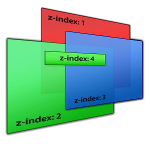
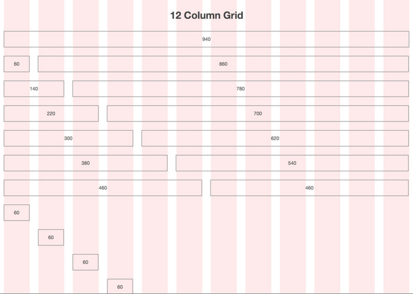
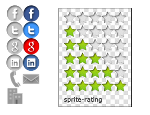

CSS Basics
Intro
CSS (Cascading Style Sheets) allow us to alter the presentation of our page. You’ll remember that HTML handles the content. This separation of duties is very important.
CSS Rules
CSS is made up of one more rules. A rule has two main parts, a selector and one or more declarations. Each declaration itself consists of a property and a value. Here's an example:
p {
font-size: 24px;
color: #777777;
}
The selector is first, and describes which HTML elements the following declarations should affect. In this case, it's just p which means "select all pargraph elements". HTML tag names are one type of selector, but there are many, many more types of selectors. More on that soon.
After the selector, we have two declarations. The first sets the font-size property to 24px and the other sets the color property to #777777, a light gray.
Using Multiple Selectors
By the way, if you want the same styles to apply to more than one selector, you don't have to copy all the styles into a different rule. Instead, simply separate multiple selectors with commas, like so:
p, blockquote {
line-height: 16px;
}
Now, both <p>'s and <blockquote>'s have a line-height of 16px.
Where can I put CSS?
Lot's of places!
Inline -- attached directly to an opening HTML tag via the "style" attribute, like so:
<p style="font-size: 24px; color: #77777"> ... </p>
- No selector needed here, we already know the HTML element to apply the styles to.
- Inline styling is BAD because it violates the separation of content and presentation.
Inside a style tag in the <head> of the document, like so:
<html>
<head><style> p#foo { font-size: 24px; color: #777777 }</style></head>
<body><p id=”foo”> stuff </p></body>
</html>
- We're finally using selectors (which is good), but the content and presentation and content are still in the same file, which isn't ideal. The much better way to do this is...
In a separate CSS file linked in the head of your document, like so:
<head><link href=”style.css” rel=”stylesheet” type=”text/css”></head>
- This is the preffered way of adding CSS to your document!
Cascading
CSS styles "cascade" down the DOM. For example, given the following HTML:
<html>
<head></head>
<body>
<p>Some text <span>here!</span></p>
</body>
</html>
...and the following CSS...
body {
font-size: 14px;
}
The font size rule applied to the body will cascade down the DOM and to the <p> and <span>. Thus, the <p> and <span> will have a font-size of 14px, unless of course, there is a more specific style telling them otherwise. More on this soon.
How are styles applied?
The browser applies styles in a specific order:
- Browser Default Styles: These are the way a browser thinks things should look based on the html tag used. For example, the browser might decide that all paragraphs should have a 20px bottom margin. This can be inconsistent from browser to browser though.
- Page Defined Styles: Any stylesheets defined by the webpage itself, either in the html, or in a linked css file.
- User Defined Styles:Some browsers allow the user to define their own stylesheets from webpages you visit. These get applied last.
- What about multiple stylesheets linked within the same HTML file?
The file that is farther down in the html source takes precdence?
- What about within the same stylesheet?
The rule that is farther down in the css file will get applied. Sensing a pattern here?
- What if there are two (or more) selectors which match the same element(s)?
The one that is the most specific will get applied, regardless of the order the are defined in. For example, given the following html:
<html>
<head></head>
<body>
<div id="foo">Carpe Diem!</div>
</body>
</html>
...and the following CSS...
body { color: green; }
div { color: red; }
#foo { color: blue; }
The text "Carpe Diem!" will be displayed in blue, because the #foo selector is the most specific out of all three.
Selector specificity can get quite complicated, and you can read about all the gory details here if you want. In the majority of cases though, adding an ID to your selector will solve your specificity problems.
CSS "Inheritance"
The title is a bit misleading. There's really no true inhertance in CSS. But that doesn't mean we can't do inheritance-like things. For example, say we wanted to make a css class called "button" that would apply a bunch of styles to make something look like a button. The styling for that class might look something like this:
.button { /* base styles for all buttons */
display: inline-block;
margin: 5px;
font-weight: bold;
font-size: 12px;
text-align: center;
padding: 8px 12px;
border-radius: 3px; /* css3 */
box-shadow: 1px 1px 8px #666; /* css3 */
background-color: #f6f6f6;
cursor: pointer; /* makes the cursor a "hand" instead of a "pointer" */
}
Now we've got a nice gray button. Hooray! But what if want to make a green button now, to indicate positive actions? We might consider making a new class, copying all the styling from the existing buttons, but changing the background color. But this would be a lot of duplicate code.
Ideally, we'd be able to specify that the button-good class inhertis all of it's styles from the button class. Unfortunately, no such structure exists in CSS. But we can do something that is effectively the same. For example, here's our new button-green class:
.button-good { /* a green button */
background-color: #66bb66;
}
Note that all it contains is the background-color rule. Now, our html might look like this:
<div class="button button-good">Press Me!</div>
Here we've given the element both the button and button-good classes, so both sets of styles will be applied. On the background-color property though, we've got two values specified, one from each class. However, as long as we've defined the styles for button-good after the styles for button in the css file, the background-color from button-good will be applied. The ordering of the class names in the html has no effect.
.
For a more complete example of this technique, see this link.
CSS Psuedo-Classes
CSS Psuedo-Classes (also sometimes called Psuedo-Selectors) are special selectors that allow you to access elements at specific states, or when they are in special positions.
The most common of these is the :hover psuedo-selector, which allows you to specify certain styles to be applied only when the user has hovered over an element. For example, say we're working with the button styles from earlier, but we want the background color and text color of the button to get lighter when we're hovering over it. We'd specify that in CSS like this:
.button:hover { /* triggered when you mouse over the element */
background-color: #01B3E4;
color: #fff;
}
Psuedo-selectors can also be used to select only elements which are at certain positions in the DOM. For example, the following css will only target <p>'s that are the first child of their parent:
p:first-child { /* selects all <p>'s that are the first child of their parent */
color: blue;
}
To read about all the different psuedo-selectors, read this article. To see more psuedo selectors in action, see this live example.
CSS Layout
Block vs Inline
By default, some html elements are "block" and some are "inline".
Block Elements:
- will always expand to fit the width of their container, but will only expand vertically to accomodate it's content (an empty block element will be full width but have a height of 0.
- will force a newline before and after
- Can accept a width, height, margins, padding, and border
- Examples: <p>, <div>, <li>
Inline Elements:
- will wrap tightly around their content both horizontally and vertically
- flow with text (does not create line breaks)
- will accept left and right margins (but not top or bottom), and accepts any border or padding
- will ignore set widths and heights
- Examples: <a>, <span>
There are also a few other smaller differences. See this link for details.
Z-Index
The z-index is a css property that specifies the stacking order of elements. In other words, it can control what's "on top".
In genreal, an element with a higher z-index will display on top of an element with a lower z-index. The z-index property can be set to any positive or negative integer. The default rendering layer is considered to have a z-index of 0.

You likely won't need to use z-index very often, but it's important to know nonetheless.
And of course, as with most things CSS, the rules are actually a little bit more complicated. See this page for more information.
The CSS Display Property
The CSS display property describes how an element should be...uhh...displayed. Common values are:
- display: block;
Forces the element to behave like a block element.
- display: inline;
Forces the element to behave like an inline element
- display: inline-block;
Firce an element to behave like a block element, but without forcing newlines before and after.
- display: none;
Forces the elemment to not display at all. Useful for hiding things programatically.
A quick demo of all of these dispaly properties can be found here, and a full list of accpetable values for display can be found here. However, the above 4 are the one's you'll use 95% of the time.
The CSS Position Property
The CSS position property describes how an element should be positioned. Common values are.
- position: static;
- The default value. Elements are positioned according to the normal flow of the document.
- Will ignore top, right, bottom, and left CSS properties.
- position: fixed;
- The element is positioned relative to the browser window, and will not move even if the page is scrolled.
- Effectively pulls the element out of the document--other elemetns will ignore it when positioning themselves.
- Accepts top, right, bottom, and left properties as offset from the top, right, bottom, and left edges of the browser window.
- position: relative;
- The element is positioned relative to it's normal, static psoition.
- Accepts top, right, bottom, and left properties as offsets from it's normal position (a relatively positioned element without any of these offsets declared will just display in it's static position.
- position: absolute;
- The element is positioned relative to the first parent element that does not have static positioning. If none is found, the <html>l; element is used.
- Accepts top, right, bottom, and left properties as offsets from the first parent element without static positioning.
- Effectively pulls the element out of the document--other elemetns will ignore it when positioning themselves.
As usual, there are some caveats. See here for a live example, or here for a lengthier explanation.
The CSS Float Property
In CSS, the float property allows content to be pushed to the left or right. A "floated" element is not removed from the flow of the document (text and other inline elements will wrap around it), but also has no height according to it's parent container. This means that an element which contains exclusively floated elements inside it will have a height of 0. Thing of floated elements as only being attached to their container at the top edge.
Floating is one of the most complicated concepts in CSS, and is hard to explain adequately in just a paragraph or two. I strongly suggest you read this article (and perhaps this one too) to get the full scoop.
In the meantime, here are some of the common float values:
- float: left;
The element is pushed as far left as it can go, until it's left edge reaches the left edge of it's container, or reaches the right edge of another floated element.
- float: right;
Same as float: left;, but to the right!
- float: none;
The element is not floated at all (this is default).
The CSS Clear Property
In simple terms, the CSS clear property allows you to force newlines after floated elements. This is much easier demonstrated than explained. For example, say we've got this situation:

But we want something like this:

This is accomplished with the following simple line of CSS:
#footer {
ckear: both;
}
Coommon values of the float property are:
- clear: left;
The element will drop below any element that is floated left.d
- clear: right;
The element will drop below element that is floated right;
- clear: both;
The element will drop below any floated element.
Layout Engines
The layout engine in your browser is responsible for computing the positioning of everything on a webpage. Different browsers use different layout engines, which is the main reason that we there inconsistencies between them. Here are a few popular layout engines:
- Webkit: Open source. Used in Google Chrome, Safari, and lots of other smaller browsers. Has the largest market share of any layout engine right now. Also, has a long and interesting history.
- Gecko: Open source. Used primarily in Firefox.
- Trident: Used in Internet Explorer. Underwent major improvments for the release of Internet Explorer 9.
- Presto: Used in Opera.
CSS Resets
Because of the inconsistencies in the layout engines, it's often useful to use a CSS Reset in your projects. A CSS Reset is simply a stylesheet which resets margins, paddings, and other properties back to 0 for every html element. This way, any styles you apply in your own stylesheet after the CSS Reset will have the same "starting point", regardless of the browser defaults.
Eric Meyer's CSS Reset is one of the most popular.
Fixed Layout vs Fluid/Liquid Layout
Fixed and Fluid are the two most popular layout patterns for modern websites.
Fixed Layouts:
- Have an outer conatiner with a defined width.
- The layout is always the same size regardless of the size of the browser window, unless specifically programmed otherwise.
- Gives a web developer more control because they know that the computed width of various elements will stay the same.
- Easier to code.
Fluid/Liquid Layouts:
- Have an outer container with a width of 100%, forcing it to fill the entire browser window, regardless of how big or small that may be.
- Have subsections within the otuer container with widths that are usually defined with percentages rather than pxiels so that they are always the same proprotion regardless of the window size.
- Uses space more efficiently because it always use all the available space in the browser window.
- Harder to code, and harder to design for.
Which layout type should I use?
Up to you! Fixed layouts are not considered "bad" by any means. Often the layout you choose depends on what kind of site or application you're buidling.
Vertical Positioning in CSS
CSS does not play nicely with pretty much anything to do with vertical positioning and sizing. Vertical centering, for example, can be difficult without javascript. The CSS Equal Height Column problem is an even more difficult example. We'll see more about this in the optional CSS lab.
CSS Grid Systems
CSS Grid Systems are css libaries which provice you with a bunch of default styles for working with a grid-based layout. Note that the word "grid" here means nothing in CSS. There is no grid preoprty. Rather, "grid" here just refers to the design pattern of laying things out in a grid-like fashion.
Often, grid systems be split into 12 or 16 columns. Then, you'll be able to specify how wide you want something to be within the grid by using special classes. For example, in a 12 column grid, you might use the class "span_4", "4 columns", or something similar to specify that you want an element that is a third the width of the grid. When in doubt, refer to the documentation of the grid system itself.

Some popular grid systems are:
- 960.gs - Available in either 12 or 16 columns, which fit inside a 960px wide container.
- Skeleton - A responsive grid system (among other things) which uses CSS3 media queries to change the grid system on the fly for devices with smaller screens.
Beware of extra included boilerplate code! If you don't need it, don't include it on your page.
Using Images in CSS
Bandwidth matters, especially on mobile. That's why it's important to choose the correct image type when working on the web. First, some terms relating to image compression:
- Lossy: An image compression algorithm is considered lossy if it throws away data from the image in the process of compressing it. For example, it might decide to reduce the number of unique colors in an image in an effort to make it smaller.
- Lossless: An image compressional algorithm is considered lossless if it effectively ccontains the same information as it's uncompressed counterpart, without throwing anything away.
Image Types
- JPEG:A lossy format good for photographs or large images where quality isn't an issue.
- PNG:A lossless format which supports full alpha transparency (meaning a pixel can be anywhere from 0 to 100% transparent).
- GIF:A lossless format that is good for images with few colors. It does transparency, but only in the binary sense--a pixel is either transparent or it isn't, no in between.
JPEGs and PNGs are used most often in web design. These days, most people only use GIFs for images that need animation. For more details, see this article.
Sprite Sheets
Each image you load is another HTTP request. Only so many HTTP requests can run in parallel for any given domain. Because of this, our page will load faster if we can minimize the number of HTTP requests we're making. One common way to do this is to use sprite sheets instead of individual images.
Sprite sheets work by combining related images into one, like so:

Then, you can use the background-position property in CSS to pull out only the part of the image you want.
One common use of this is for changing a background image on hover. The non hover image will load as soon as the page is loaded. However the hover image won't load until it absolutely has to, so there will be a slight delay when the user attempts to hover over the item for the first time. To solve this, we can combine both the non-hover and hover images in the same file, so they load together. Then, on hover, instead of changing the background-image, we simply shift the background-position up.
See here for more information.